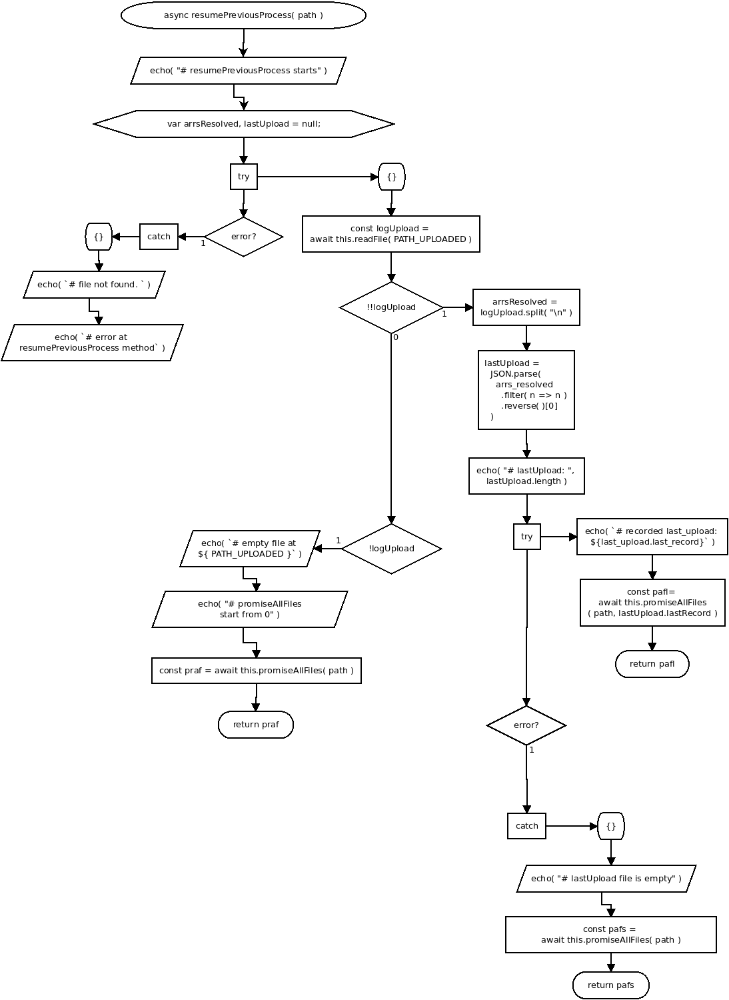

async function resumePreviousProcess( path )
Flowchart

Code
async resume_previous_process( path ){
echo( "# resume_previous_process starts" );
var arrs_resolved, last_upload = null;
try{
const log_upload = await this.read_file( PATH_UPLOADED );
if( !!log_upload ){
arrs_resolved = log_upload.split( "\n" );
last_upload = JSON.parse( arrs_resolved.filter( n => n ).reverse( )[0] );
echo( "# last_upload: ", last_upload.length );
try{
echo( `# recorded last_upload: ${last_upload.last_record}` );
const pafl= await this.promise_all_files( path, last_upload.last_record );
return pafl;
} catch {
echo( "# last_upload file is empty" );
const pafs = await this.promise_all_files( path );
return pafs;
}
} else if( !log_upload ){
echo( `# empty file at ${ PATH_UPLOADED }` );
echo( "# promise_all_files start from 0" );
const praf = await this.promise_all_files( path );
return praf;
}
} catch{
echo( `# file not found. ` );
echo( `# error at resume_previous_process method` )
}
}
Refers to:
-
async readFile( filepath )
-
async promiseAllFiles( path, recorded_last_upload = 0 )